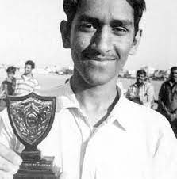

Early career
Junior cricket in Bihar
In 1998, Dhoni was selected by Deval Sahay, a former Bihar Cricket Association Vice President and Ranchi District Cricket President, to play for the Central Coal Fields Limited (CCL) team.[30] Till 1998 Dhoni, who was in 12th grade, had never played professional cricket. At CCL, he got an opportunity to bat higher up the order, where he performed exceptionally, which had helped CCL move to the A division.[31] Deval Sahay, impressed by his performance, pushed for his selection in the Bihar team. Dhoni moved to the Ranchi team, the junior Bihar cricket team and eventually the senior Bihar Ranji Team within one year
In the 1998–99 Cooch Behar Trophy, Dhoni played for the U-19 Bihar team and scored 176 runs in 5 matches (7 innings). However, Bihar finished fourth in the group of six and did not make it to the quarter-finals. Dhoni was not picked for the East Zone U-19 squad (CK Nayudu Trophy) or Rest of India squad (MA Chidambaram Trophy and Vinoo Mankad Trophy). In the 1999–2000 Cooch Behar Trophy, the Bihar U-19 cricket team made it to the finals, where Dhoni's 84 helped Bihar post a total of 357.[35] Nevertheless, Bihar's efforts were thwarted by Punjab's 839 with Dhoni's future teammate Yuvraj Singh making 358.[36][37] Dhoni's contribution in the tournament included 488 runs (9 matches, 12 innings), 5 fifties, 17 catches and 7 stumpings.[38] Dhoni made it to the East Zone U-19 squad for the CK Nayudu trophy in the 1999–2000 season but scored only 97 runs in four matches, as East Zone lost all four matches and finished last in the tournament

International career
Start of ODI career
The Indian ODI team in the early 2000s saw Rahul Dravid as the wicket-keeper to ensure that the wicket-keeper spot didn't lack in batting talent.[59] The team also saw the entry of wicket-keeper/batsmen from the junior ranks, with talents like Parthiv Patel and Dinesh Karthik (both India U-19 captains) named in the Test squads.[59] With Dhoni making a mark in the India A squad, he was picked in the ODI squad for the Bangladesh tour in 2004/05.Dhoni did not have a great start to his ODI career, getting run out for a duck on debut. In spite of an average series against Bangladesh, Dhoni was picked for the Pakistan ODI series